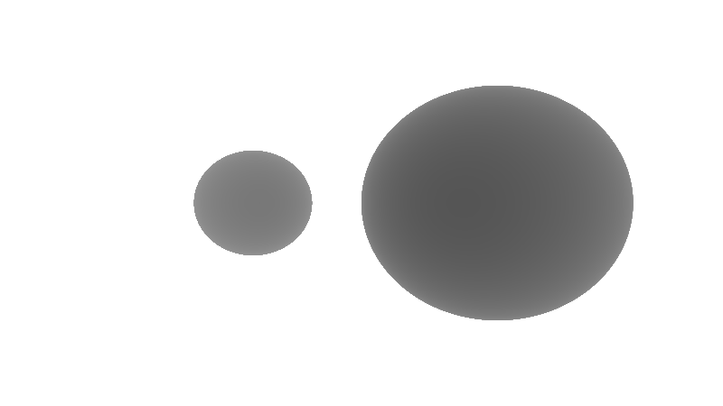
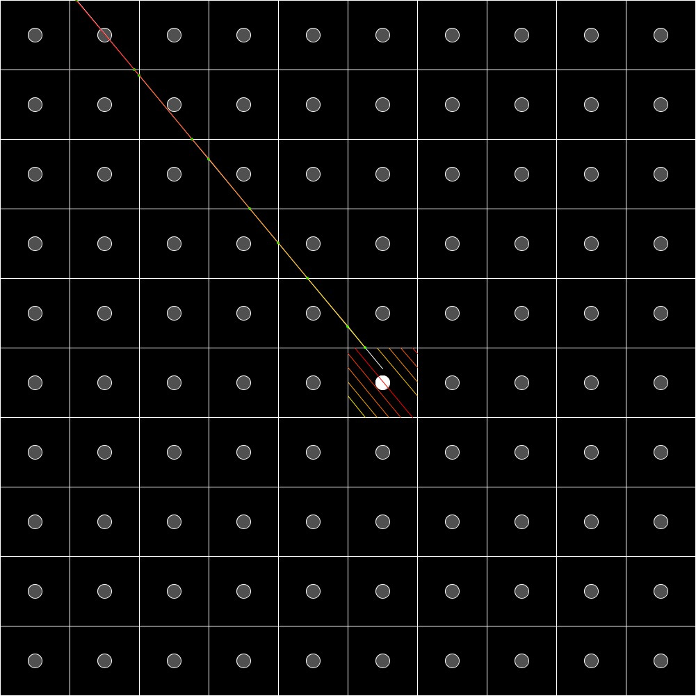
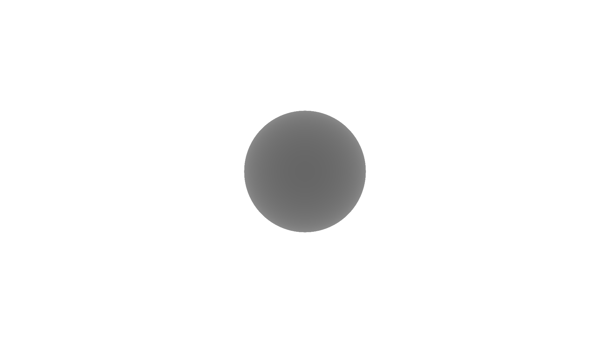
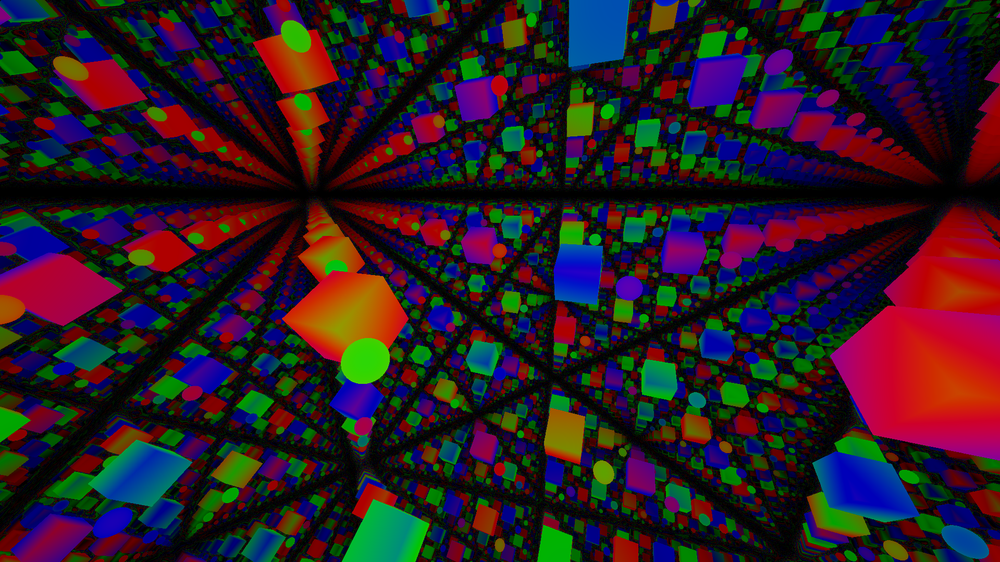
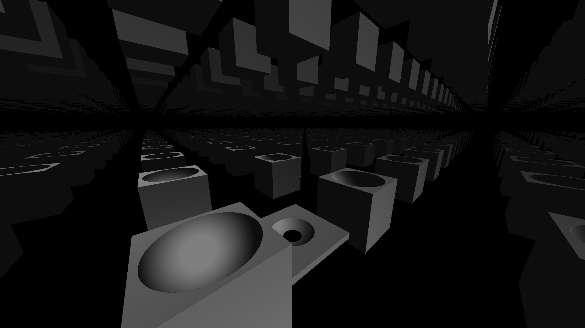
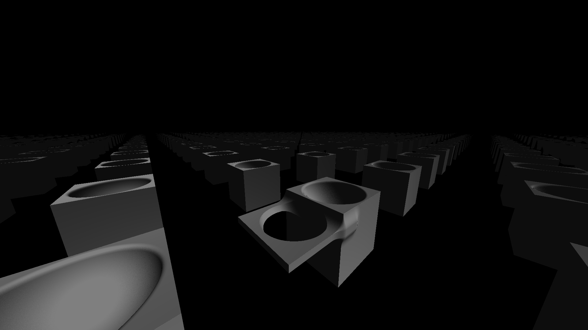

Explanation (skip to showcase)
Ray marching is a ray based rendering technique, which can be used for 3D graphics. A ray is defined as a line which starts from a point in a specific direction, but doesn’t have a specified end point.
In its most basic case called Sphere tracing, rays are sent out from the camera, each ray corresponding to a pixel. The starting point of the ray moves forwards in the direction of the ray, until the ray is close enough to the surface of an object in the scene. In ray marching they call this process marching each ray forward. The distance marched each time is the minimum distance from the current ray start position to any part of the surfaces in the scene.
The 3D scene is defined using a function which returns this minimum distance to the closest object surface, from given point. If the given point is inside an object the function returns a negative number. This kind of function is called a signed distance function, because of the change in sign from the outside of a surface to the inside (positive to negative).
You can find lots of signed distance functions for simple 3D shapes on this website made by Inigo Quilez.
More specifically now the signed distance function has been defined. Each ray from the camera is marched the distance returned from the signed distance function with the current ray start position as an input, until the signed distance function gives a low enough distance for it to be counted as being on the surface. By only marching the minimum distance this algorithm is guaranteed to not overshoot the object. Usually there is a programmed upper limit on the number of marches per ray to prevent rays from travelling forever if they don’t intersect an object. If a distance from the signed distance function becomes very large the ray may stop marching and the ray is deemed to be pointing into empty space, for extra optimisation.
- Ray marching
- A way to render a 3D scene
- Uses a signed distance function to define the scene with objects such as:
- Spheres
- Cubes
- Fractals
- Tetrahedrons
- Signed distance function
- A function which returns the minimum distance from a surface in the scene
- Positive outside the object
- Zero on the surface of the object
- Negative inside the object
- The signed distance function of multiple objects is just the minimum distance returned from the signed distance functions of all objects
- Calculate the distance away from each object
- Return the shortest out of these distances
The most simple useful signed distance function I know, is that of the sphere. Since a sphere is defined as a set of points which are all a radius (in distance) from the sphere’s centre, we can use Pythagoras. Pythagoras works in any number of dimentions (in order to find the distance between a point and the origin) but for 3 dimentions we can find the distance a given point is from the origin using: \[\sqrt{x^2 + y^2 + z^2}\] But we want to be able to find the distance of a given point from the central point of the sphere, so we should use: \[\sqrt{(x - x_c)^2 + (y - y_c)^2 + (z - z_c)^2}\] Now we want it to be zero on the surface whereas at the moment it only tells us how far the point is from the centre, so we must subtract the radius. We end up with: \[\sqrt{(x - x_c)^2 + (y - y_c)^2 + (z - z_c)^2} - r\] where:
| Variable | Description |
|---|---|
| \(x\) | x of position inputted |
| \(y\) | y of position inputted |
| \(z\) | z of position inputted |
| \(x_c\) | x of sphere centre position |
| \(y_c\) | y of sphere centre position |
| \(z_c\) | z of sphere centre position |
| \(r\) | radius of the sphere |
In GLSL this sphere signed distance function could be written as
float signedDistanceSphere(vec3 position, float radius)
{
// GLSL has a function called length which takes a vector and tells you its length
// meaning we don't have to do Pythagoras ourselves.
// Equivalent to: return sqrt(pow(position.x, 2.0) + pow(position.y, 2.0) + pow(position.z, 2.0)) - radius;
return length(position) - radius
}
float signedDistance(vec3 position)
{
return signedDistanceSphere(position, 1.0);
}
To do two spheres at different locations we can just do
float signedDistance(vec3 position)
{
return min
(
signedDistanceSphere(position, 1.0),
// Sphere with centre at (4, 0, 0) with a radius of 2
signedDistanceSphere(position - vec3(4.0, 0.0, 0.0), 2.0)
);
}

Ray marching has some advantages over other forms of rendering because the space can be transformed more easily. A space transformation works by changing the input to a signed distance function.
By translating the object to not fall over a boundary by taking away a vector from the point. Then taking the modulus (remainder) of the position into the signed distance function before finally translating back (by adding the previous vector). You can repeat an object. This means you can have objects seemingly repeat forever, without much of a performance penalty.
You can think of this working by wrapping the ray. Shown below each segment of the ray between two boundaries is coloured so you can see where it would wrap back around into the first square. The grey circles show the appearence of the repeated object, the white circle shows the actual circle.

In practice you could make a helper function to do this for you:
vec3 repeat(vec3 position, vec3 direction)
{
vec3 repeated = position + direction.xyz * 0.5;
direction = abs(direction);
if (direction.x > 0.0)
{
repeated.x = mod(repeated.x, direction.x) - direction.x * 0.5;
}
if (direction.y > 0.0)
{
repeated.y = mod(repeated.y, direction.y) - direction.y * 0.5;
}
if (direction.z > 0.0)
{
repeated.z = mod(repeated.z, direction.z) - direction.z * 0.5;
}
return repeated;
}
And then use it like so:
float signedDistance(vec3 position)
{
return signedDistanceSphere
(
repeat
(
position,
vec3(4.0, 4.0, 4.0)
),
1.0
);
}
You can also do reflections and scaling, allowing you to render 3D fractals like the Sierpiński tetrahedron.
Showcase
All the following examples I programmed as a fragment shader written in GLSL on Shadertoy. This means it runs faster that it would have on my CPU, since GPUs typically have more cores. They are therefore more suitable at marching lots of rays in parallel (at the same time), despite each core usually having worse performance than a CPU.
Simple ray marcher with pixel colour only based on distance
Sphere

Space repetition
The following picture shows what I meant by being able to use the modulus operator to repeat an object.

Ray marcher with basic lighting
Next I wanted to add lighting to the ray marcher.
This lighting uses the direction of the face of an object and compares it to the direction of a global light source to find how bright the surface should appear.
To do this I calculate the normal vector to the surface, once a ray hits the surface of an object by doing the derivative of the signed distance function. Giving the direction of the face the ray landed on. Then I do the dot product between the light direction and the normal vector, to basically get how much the face is pointing in the direction of the light. Then colour it based on that.

This picture also shows how you can easily add and subtract objects from each other. This is using the maximum of two minimum distances from the two shapes (cube and sphere in this case) with the distance to the shape you want to be subtracted as a negative number. You can even combine shapes in a smooth way leading to the shapes kind of melding into each other.
